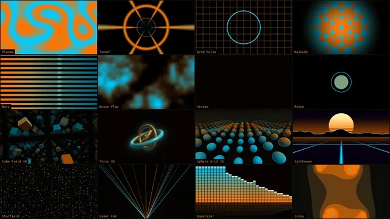
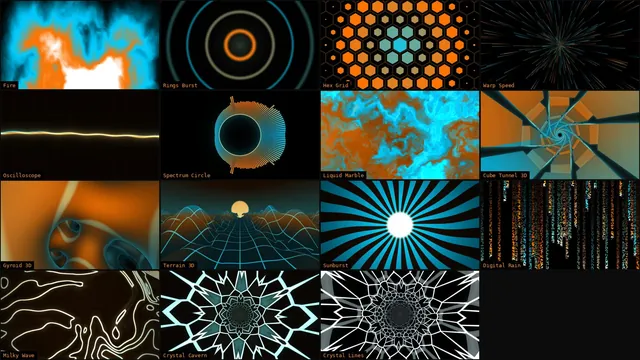
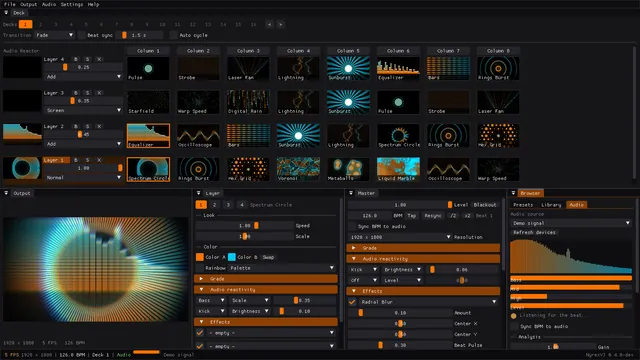
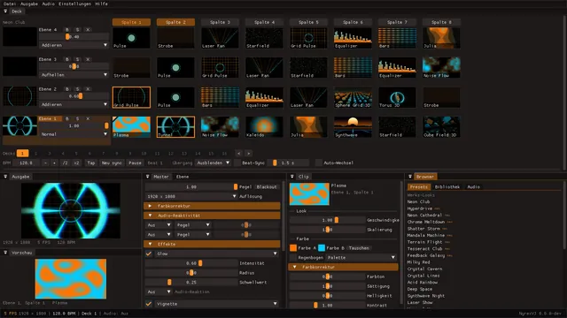
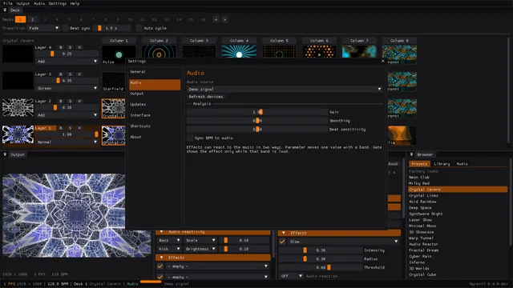

Clips and effects
More than 50 clips (fractals, raymarched 3D scenes, neon geometry, lasers, spectrum visuals) and more than 70 effects. Drop in your own shader files, also from Shadertoy.
Your own shader clips →NyrexVJ is a free VJ program in the spirit of Resolume Arena. It plays generative clips and videos on layers, stacks effects on top, follows your music and sends the picture to OBS or to a fullscreen output window. Native C++ and OpenGL, no game engine, one program file for Windows and one for Linux.
Open source (MIT licence), free of charge, no account, no ads. Development builds are published as the Nightly release, so expect rough edges.

A short tour. The full list is in the README and the docs, which are written in English.

More than 50 clips (fractals, raymarched 3D scenes, neon geometry, lasers, spectrum visuals) and more than 70 effects. Drop in your own shader files, also from Shadertoy.
Your own shader clips →
Play .glb and .gltf models like any clip, or build scenes from shapes, models and lights in the Clip Creator and save them as portable .nyxclip files.
3D scenes →
Build your own effects in a node editor. A graph of 68 nodes (picture, audio, beat, maths, colour, distortion, noise, shapes) becomes one shader, and effects are small files you can share.
Node effect editor →
Layers and effects follow system audio, a microphone or a line-in. Control it from a MIDI controller or over OSC, use one beat clock with timecode and MIDI clock, and send the picture to OBS with Spout or to other programs with NDI.
Show sync →
HAP clips go to the graphics card compressed, other videos can use hardware decoding, and the monitor shows what every clip costs. Built to run next to VRChat.
Image and video clips →
Add modulation sources and image sources with a small C interface. Plugins are native code and are off until you switch them on.
Plugins →NyrexVJ is licensed under the MIT licence. The code, the roadmap and the decisions behind it are on GitHub, and issues and pull requests are welcome. The interface is available in English, German, Spanish, French, Italian, Portuguese, Dutch and Japanese.